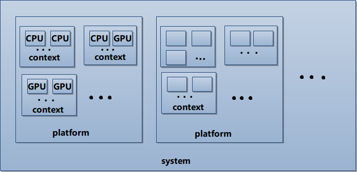

data: 2013-10-28 layout: post title: OpenCL学习笔记——基本术语解释（一） categories: opencl
我们在做 OpenCL 编程时，会先做很多环境设定。上一篇的示例程序中，出现了诸如 platform，context，device，kernel，buffer 等等术语。这些对于以前做过图形编程的开发人员来说，见之会心一笑。而对其他人来说则莫名其妙。所以，这篇文章来详细讲解一下这些术语。当然，不足之处在所难免，一切以 OpenCL Specification 为准。
OpenCL 全称 Open Computing Language，作为开放语言自然有其开放的特质。其为异构平台提供了一个编写程序，尤其是并行程序的开放式框架标准。它支持的异构平台可由多核 CPU、GPU 或其他类型的处理器（DSP）组成。
这个框架标准具体来说就是 platform。OpenCL 使用的是 Installable Client Driver,ICD 模型，意味着一个系统上可以有多个 OpenCL 实现并存。简单地说，你的系统上有多少个 OpenCL 框架/实现/ platform，取决于你有什么硬件和与之配对的驱动程序。比如，我的系统是 Windows+Intel处理器+AMD显卡，所以装好显卡驱动后，我的PC上就有两个 OpenCL 框架/实现/platform，如果你再装个 NVIDIA 显卡和驱动，那就又多了一个 platform。例外的是苹果电脑，由于它的封闭统一性，便只有一个 OpenCL platform。
到此，我们可以明白，platfrom == implement，你的系统上有多少个 OpenCL 实现，就有多少个 platform。一般具体的实现都在驱动程序里面，所以千万记得装好对应的驱动程序！
我们可以通过 clGetPlatformIDs 来查询 platform 集。
cl_int clGetPlatformIDs( cl_uint num_entries,
cl_platform_id *platforms,
cl_uint *num_platforms )
这类查询函数在 OpenCL 里用法相似。两次调用，第一次获取结果的个数/大小以便申请内存空间，第二次调用来获取具体的结果集。
举个例子来说明一下：
cl_int status; // 获取函数返回值，一般是状态码
cl_uint numPlatforms; // platfrom 数量
cl_platform_id *platormIds; // 存储所有 platform 的空间
// 第一次调用，获取 platform 个数
status = clGetPlatformIDs( 0, NULL, &numPlatforms );
// 利用获取的个数来申请内存空间
platformIds = (cl_platform_id *)alloca(sizeof(cl_platform_id) * numPlatforms);
// 第二次调用，获取 platform ID 列表
status = clGetPlatformIDs( numPlatforms, platformIds, NULL );
注意：对于苹果系统，这一步没有必要，因为 MAC 上只有一个 platform。
在已知了 platform 之后，可以通过 clGetPlatformInfo 函数来获取 platform 的各个属性。
cl_int clGetPlatformInfo( cl_platform_id platform,
cl_platform_info param_name,
size_t param_value_size,
void *param_value,
size_t *param_value_size_ret )
其中 param_name 的取值如下：
-CL_PLATFORM_PROFILE // OpenCL 简档
-CL_PLATFORM_VERSION // OpenCL 版本
-CL_PLATFORM_NAME // platform 名字
-CL_PLATFORM_VENDOR // platform 开发商
-CL_PLATFORM_EXTENSIONS // platform 支持的扩展列表
// 它们的返回值都是 字符串。
该 API 的具体使用请参考 OpenCL Specification。
如果说 platform 只是一个框架实现，看得见摸不着。那么 device 就是一个非常具体的存在了。简单地说，device 就是硬件设备，比如 CPU,GPU。你的应用程序将利用这些计算设备来执行代码。
各个 platform 可能会分别关联一组计算设备。在给定的 platform 上，可以使用 clGetDeviceIDs 来获取与之关联的受支持的设备列表。
cl_int clGetDeviceIDs( cl_platform_id platform,
cl_device_type device_type,
cl_uint num_entries,
cl_device_id *devices,
cl_uint *num_devices )
其中 device_type 代表你获取的设备的类型，其取值如下：
-CL_DEVICE_TYPE_CPU // host 端的 CPU 设备
-CL_DEVICE_TYPE_GPU // GPU 设备
-CL_DEVICE_TYPE_ACCELERATOR // OpenCL 加速器
-CL_DEVICE_TYPE_DEFAULT // 默认设备
-CL_DEVICE_TYPE_ALL // 与相应 platform 关联的所有设备
CPU是一个同构设备，通常可以利用大缓存进行优化来减少延迟。比如 AMD 的 Opteron 系列和 Intel 的 Core 系列。
GPU是面向图形和通用计算的大吞吐量设备。比如 AMD 的 Radeon 系列和 NVIDIA 的 GTX 系列。
ACCELERATOR涵盖了从 IBM 的 Cell Broadband 体系结构到不太著名的 DSP 型等大量的设备。
DEFAULT允许 OpenCL Running time library 指定一个“首选”设备。
ALL允许 OpenCL Running time library 指定所有可用设备。
对于 CPU,GPU 和 ACCELERATOR 设备，对 platform 提供的设备数量没有任何限制，由应用程序负责查询来确定具体的数目。当然，使用的 API 还是 clGetDeviceIDs。
对于获取的某个 device，可以利用 clGetDeviceInfo 函数查询其各项属性：
cl_int clGetDeviceInfo( cl_device_id device,
cl_device_info param_name,
size_t param_value_size,
void *param_value,
size_t *param_value_size_ret )
这个函数能够返回的信息非常多,大概好几十种吧，从设备类型到设备的内存状态均能获得。具体的请查阅 OpenCL Specificaion。至于函数的使用，咱们以后在具体示例中来展现。
context 是所有 OpenCL 应用的核心。它为与之关联的 device,memory,command queue 提供一个容器。如果说 platform 等于 实现，device 就是 设备，那么 context 就是一个 管理员。它管理着应用程序与设备，设备与设备之间的通信。
正如 platform,device 有很多个一样，context 也可以有很多个。不同之处在于，前面两个的个数我们没法控制，是硬件/软件提供商提供的，而 context 是由我们自己决定的。
我们可以由不同的 platform 创建多个 context，并把工作分布到这些 context 和与之关联的 device 上。下面这幅图可以直观的展示它们之间的关系，简单的说，都是 一对多 的关系。

context 不再由别人提供，需要我们自己来创建。有两种方式来创建：已知一个 platform 和一组关联的 device，可以使用 clCreateContext 函数来创建；已知一个 platform 和 device 的类型，可以使用 clCreateContextFromType 函数来创建。
cl_context clCreateContext( const cl_context_properties *properties,
cl_uint num_devices,
const cl_device_id *devices,
void (CL_CALLBACK *pfn_notify)( const char *errorinfo,
const void *private_info,
size_t cb,
void *user_data ),
void *user_data,
cl_int *errcode_ret )
cl_context clCreateContextFromType( const cl_context_properties *properties,
cl_device_type device_type,
void (CALLBACK *pfn_notify) (const char *errinfo,
const void *private_info,
size_t cb,
void *user_data),
void *user_data,
cl_int *errcode_ret )
参数 pfn_notify 和 user_data 用来共同定义一个回调，用于报告 context 生命期中所出现错误的有关信息，记得把 user_data 最为最后一个参数传给回调函数。
同样的，我们也可以通过 API 来查询 context 的属性，clGetContextInfo 函数的具体用法将在以后的示例程序里展现。
cl_int clGetContextInfo( cl_context context,
cl_context_info param_name,
size_t param_value_size,
void *param_value,
size_t *param_value_size_ret )
所有的 OpenCL 对象都是引用计数的，对于 context 这类有我们自己创建的对象，需要我们自己来递增和递减引用数。
cl_int clRetainContext (cl_context context) // 递增引用数
cl_int clReleaseContext(cl_context context) // 递减引用数
废话了这么多，简单而粗略的总结：